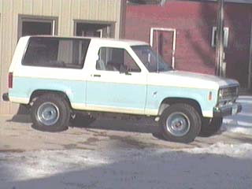
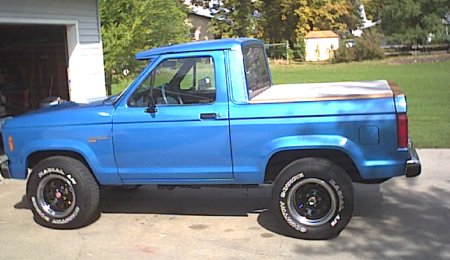
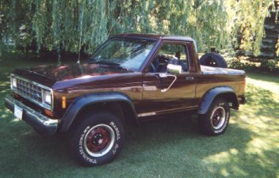

This is my favorite, it is 1988 XLT, 2.9, stick. I have repainted it , and done a few minor changes to the engine.I modified the throttle body,and installed dual exhaust. I was amazed at the performance increase.I will be doing more mods in the future. I do all my own work, and really enjoy it.
This is my favorite, it is 1988 XLT, 2.9, stick. I have repainted it , and done a few minor changes to the engine.I modified the throttle body,and installed dual exhaust. I was amazed at the performance increase.I will be doing more mods in the future. I do all my own work, and really enjoy it.

I am including some close-up pics of the cab area. I used the rear hatch for
the back window and tailgate. I cut it right below the rubber on the bottom
of the window.Then when I installed it for a rear window, I reinforced it with
a 3/4X1/8 inch angle iron on the bottom edge.



